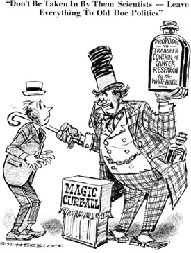

After years of promises, what had really changed?
By 1985, the United States had spent years fighting the War on Cancer. New laboratories had opened, cancer centers had expanded, and thousands of studies reported new medicines and combinations.
But amid the constant stream of announcements, a simple question had become difficult to answer:
Were fewer people dying of cancer because of all this effort?
A discovery might be important in the laboratory. A drug might shrink a tumor. A newspaper might call an experimental regimen a breakthrough. Yet none of those observations alone proved that the overall cancer burden was decreasing.
Mukherjee introduces researchers who tried to zoom out from individual discoveries and measure population-level outcomes over decades.
This chapter is about the mathematics of cancer, but also about a philosophical problem: how do we decide what counts as medical progress?
John Cairns examines the big picture (1985)
A Harvard biologist named John Cairns published an influential analysis in 1985. He used cancer registries—records of cancers and deaths organized by disease type—to assess changes in outcomes.
Rather than count how many papers had been published or how many drugs had entered trials, Cairns tried to estimate how many lives were being saved by newer interventions.
He separated several kinds of progress:
- Chemotherapy capable of curing particular cancers.
- Adjuvant treatments that could prevent relapse after surgery.
- Screening methods that might detect certain cancers earlier.
His method was not perfect. He had to make assumptions about who benefited and how many deaths interventions prevented. But the exercise forced policymakers to face a result that enthusiasm had often obscured.
The cures were real—but limited in scale
Cairns counted major successes in diseases such as childhood acute lymphoblastic leukemia, Hodgkin lymphoma, advanced testicular cancer, and choriocarcinoma.
These were extraordinary achievements for the patients who benefited. A child who would almost certainly have died could now sometimes grow into adulthood. A young adult with a previously fatal lymphoma might live for decades.
Yet the cancers most convincingly cured by chemotherapy represented only part of the national cancer burden.
Using the assumptions described in the book, Cairns estimated roughly 2,000–3,000 lives saved each year from these curative chemotherapy advances, excluding some additional lymphoma cures from his initial tally.
His wider estimates suggested that adjuvant treatment saved another 10,000–20,000 lives annually and that screening might prevent roughly 10,000–15,000 deaths, with considerable uncertainty in those calculations.
Comparing progress with the size of the problem
Cairns's generous aggregate estimate was approximately 35,000–40,000 lives saved each year by the advances he assessed.
This sounded substantial—and it was. But the United States was recording roughly one million new cancer cases and around 500,000 cancer deaths per year in the period discussed.
| Historical estimate in the book | Approximate amount |
|---|---|
| New cancer cases per year around 1985 | 1,000,000 |
| Cancer deaths per year around 1985 | 500,000 |
| Lives saved annually by the selected newer advances | 35,000–40,000 |
Cairns concluded that, despite important victories, the overall effect remained much smaller than the public had been led to expect from a national war.
These are historical estimates using a particular method, not current US cancer figures or a complete accounting of every benefit from cancer care.
Why Cairns began talking about prevention
Cairns looked at the history of other deadly diseases and noticed a recurring pattern. Many major reductions in mortality had come from preventing disease, rather than treating it after a person became severely ill.
Tuberculosis deaths had declined dramatically through improvements in nutrition, housing, ventilation, and public hygiene even before antibiotics had their full impact. Vaccination helped control diseases such as polio and smallpox.
For Cairns, this raised an uncomfortable question: why had cancer research concentrated so heavily on finding drugs to cure disease after it appeared?
He argued that reducing exposure to cancer-causing conditions and understanding how to prevent cancers might produce larger population benefits than endless efforts to intensify treatment.
The point was not to stop searching for cures. It was to recognize that preventing disease can sometimes save more lives than trying to rescue every person after disease develops.
John Bailar and Elaine Smith ask a sharper question
In May 1986, John Bailar and Elaine Smith published a major analysis of cancer mortality in the New England Journal of Medicine.
They wanted to compare cancer deaths across decades and determine whether the country's overall trajectory had improved.
But choosing the correct measurement was harder than it seemed. A number commonly celebrated by hospitals—the five-year survival rate—could be misleading.
To understand their argument, Mukherjee offers a simple thought experiment involving two villages. It illustrates one of the most important concepts in interpreting screening results.

The two villages: When survival improves only on paper
Imagine two villages with identical populations and identical cancer outcomes.
In both, cancer would normally be diagnosed at age 70, and patients would die at age 80.
Now imagine that Village A introduces a remarkably sensitive cancer test. The test detects the disease ten years earlier, at age 60. But no new treatment is available, so patients still die at age 80.
Village B does not introduce the test and continues diagnosing cancer at age 70.
| Measurement | Village A: Early screening | Village B: No new screening |
|---|---|---|
| Age at diagnosis | 60 | 70 |
| Age at death | 80 | 80 |
| Years lived after diagnosis | 20 | 10 |
| Extra years of actual life gained | 0 | 0 |
Village A appears to have doubled survival time after diagnosis. But its patients have not lived one day longer.
This is called lead-time bias: earlier diagnosis makes survival from the moment of diagnosis look longer, even when the time of death has not changed.
Why mortality is different from survival after diagnosis
A five-year survival rate describes the fraction of diagnosed patients who are still alive five years later. That can be useful, but it is influenced by the timing of diagnosis.
A mortality rate describes how many people in a population die from a disease during a period of time.
In the two-village example, earlier detection increases the apparent time lived with a diagnosis, but the population's cancer mortality does not change.
This is why Bailar preferred mortality when judging whether a national campaign had reduced deaths.
It does not mean early diagnosis is worthless. Earlier detection can save lives when there is an effective intervention and when the benefits outweigh the harms. It means screening must be evaluated using outcomes that can distinguish real benefit from an illusion created by earlier labeling.
Another difficulty: The population is getting older
Even mortality statistics can mislead if we compare populations with different ages.
Cancer becomes more common with age. Imagine a town with many people over seventy and another with mostly young adults. The older town would likely have more cancer deaths even if the underlying age-specific risks were identical.
The same problem appears when comparing the United States in different decades. As life expectancy rises, the country has a larger proportion of older people.
If we simply count total cancer deaths, an aging population can make cancer look more dangerous even if treatment or prevention has improved risks within each age group.
To make fairer comparisons, epidemiologists use age-adjustment.
Age-adjustment explained with an example
Suppose we compare two populations:
- Population A: 80% younger adults and 20% older adults.
- Population B: 40% younger adults and 60% older adults.
Population B will usually have more raw cancer deaths because it contains more people in the older, higher-risk category.
To compare underlying cancer mortality fairly, we ask: What would the death rate in each population look like if both had the same age distribution?
We use a standard population, apply each group's age-specific death rates to that common age distribution, and then compare the adjusted results.
This process removes much of the distortion caused by different age structures. It does not make every comparison perfect, but it helps separate changes in population age from changes in cancer mortality risk.
Bailar and Smith applied this principle across many years using a common demographic standard.
The disturbing result: A “qualified failure”
Bailar and Smith found that age-adjusted cancer mortality had increased by 8.7% between 1962 and 1985, according to the analysis presented in the book.
Part of the increase reflected the long-delayed effects of earlier rises in cigarette smoking, especially through lung cancer.
The researchers concluded that decades of expanding treatment programs had not produced the hoped-for overall decline in cancer deaths.
Their argument was deliberately provocative. They described the campaign's results as a qualified failure.
This did not mean childhood leukemia cures, testicular cancer treatments, or improved pain relief were imaginary. Those achievements were real. The point was that they had not yet reversed the overall population-level trend.
The results provoked fierce criticism from doctors and institutions invested in the War on Cancer.

Critics say the medicine was not aggressive enough
Some oncologists argued that the disappointing national numbers resulted from underuse of the most effective treatments. They cited evidence that many physicians did not use recommended combination chemotherapy or did not deliver what they considered adequate doses.
Their argument was that better implementation could save more lives.
That possibility could be true for some cancers. But Mukherjee notes a second problem: it was not established that increasing treatment intensity would automatically improve survival across cancers.
The earlier history of radical surgery and high-dose chemotherapy had already shown the danger of that assumption.
A treatment can be too weak for one condition and needlessly toxic for another. More treatment must be justified through evidence, not adopted as a default reaction to disappointing statistics.
Lester Breslow asks: Which measure really matters?
Epidemiologist Lester Breslow offered a different critique. He did not simply reject Bailar's numbers; he questioned whether one number could represent all of cancer progress.
Suppose treatment cures a five-year-old child who otherwise would have died. The treatment might preserve many decades of potential life.
Now suppose a treatment prevents cancer death in a person already near the end of the average lifespan. That outcome also matters, but it may produce fewer additional years of life.
An aggregate death count gives both prevented deaths one unit. A measure of years of potential life saved distinguishes their different impacts on life expectancy.
Breslow demonstrated that the verdict on the War on Cancer could change depending on whether researchers counted deaths, years of life, or other outcomes.
His deeper point was that the choice of metric expresses what a society values.
How the same progress can look different
| Measure | What it tells us | What it can miss |
|---|---|---|
| Five-year survival | How many diagnosed patients live at least five years | Lead-time bias from earlier diagnosis |
| Age-adjusted mortality | Changes in cancer death risk after accounting for age | Years of life gained and some quality-of-life benefits |
| Years of life saved | How much potential life is preserved | The quality of that additional life |
| Quality of life | How treatment affects symptoms and daily living | May not fully capture long-term survival |
| Relapse-free survival | Whether disease returns during follow-up | May not always equal longer overall survival |
No single metric can answer every question.
A patient may value relief from pain, more time with family, freedom from treatment, or the possibility of cure. A national health agency may ask how many deaths a program prevents. Both perspectives matter, but they are not identical.
The act of counting is therefore essential—and never entirely free from assumptions about what matters.
The neglected half of cancer medicine: Prevention
Bailar's wider concern was that the National Cancer Institute had invested far more heavily in treating established disease than in preventing it.
The book describes a historical distribution in which approximately 80% of NCI grant resources emphasized treatment and 20% prevention. By the early 1990s, prevention's share had increased, but treatment remained dominant.
Mukherjee also describes research institutions where prevention had been a marginal activity, sometimes with only a tiny portion of laboratories dedicated to it.
Why had this imbalance emerged? The promise of a magic bullet was emotionally and politically captivating. It suggested a dramatic cure, a recognizable discovery, and a heroic victory.
Prevention was often less glamorous. Cleaner environments, reduced exposure to carcinogens, altered habits, or vaccination could work gradually and without a single triumphant moment.
But those less dramatic changes could matter enormously at the level of whole populations.
The chapter's final challenge
By the end of Part Three, the War on Cancer looks very different from the optimistic campaign launched in 1971.
Researchers had developed powerful drugs, learned to run better trials, challenged damaging surgical traditions, and introduced more individualized therapies. Yet the overall burden of cancer remained immense.
The question was no longer simply, Can we discover more treatments? It was also, Which treatments change the outcomes that matter, and can some cancers be stopped before they start?
Chapter takeaway: The fight against cancer requires honest measurement. A rise in research funding, better scans, or more intensive treatment is not by itself proof of progress. We must count the lives improved, the deaths prevented, the suffering avoided—and the opportunities for prevention that were overlooked.